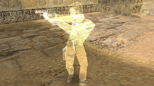

Negli articoli precedenti ho raccontato come «imbrogliare un po'» il giocatore e dargli la sensazione che il gioco si comporti in modo naturale, parlando di trucchi noti da tempo e ampiamente collaudati nei giochi single player. Ma tutto cambia quando arriva la rete e la logica va spartita tra server e client: si scopre che la partita non dovrebbe gestire allo stesso tempo inventario, account e il resto dell'economia del gioco, e che il computer su cui gira il gioco, sorpresa... appartiene al giocatore, non allo sviluppatore. Se per distrazione abbiamo dato al client il diritto di dire al server dove si trova il personaggio, quanti soldi ha e chi ha appena ucciso, prima o poi salterà fuori qualcuno che interpreterà questi diritti in modo molto più largo di quanto lo sviluppatore avesse previsto.
Salta sempre fuori un Vasja che gioca da anni, a cui della classifica in fondo non importa granché, ma che odia perdere. Lo odia al punto da essere disposto a spendere per prepararsi a una partita più soldi e tempo che per la partita stessa, mentre il suo avversario, Vasilij l'operaio, che arriva la sera dopo il lavoro e vuole solo giocare un po', ha un computer nella media, il Wi‑Fi di casa attraverso due muri e i riflessi di una persona stanca. Vasilij ogni tanto vince, ma più spesso perde, e tutto sommato gli va bene così, finché è sicuro di perdere onestamente.
Vasja viene marchiato con l'infamante parola «cheater» e immaginato come uno con l'aimbot che sposta il mirino con una velocità innaturale sulle teste degli avversari dietro i muri: è probabilmente la variante più spettacolare, facile da mostrare in un video e facile da mettere alla gogna nei commenti. Ma tecnicamente l'aimbot è solo uno dei rappresentanti più semplici di una grande famiglia di modi per raccontare al gioco una bugia, e la bugia funziona in entrambe le direzioni. Se si può falsificare ciò che vede un altro giocatore, si può anche vedere ciò che non si dovrebbe, oppure intromettersi nello scambio di dati, oppure non toccare affatto il client e sfruttare invece le persone, l'economia e la fiducia del supporto del team di sviluppo. Vasja, ovviamente, le ha provate tutte... altrimenti che Vasja sarebbe, e a volte è pure un modo per trovare lavoro, diventare un rispettabile «consulente di sicurezza» col cappello bianco e bucare servizi di gioco a stipendio, ma questa è un'altra storia.
Lasciare che comandi il client
Supponiamo che un personaggio si muova sulla mappa e che il client, dopo ogni frame, mandi al server la sua nuova posizione. Finché il gioco è piccolo e sconosciuto, è perfino comodo: il computer del giocatore ha già calcolato il movimento, al server non resta che salvare le coordinate e girarle agli altri. Solo che insieme alle coordinate abbiamo dato a Vasja il diritto di raccontare al server qualsiasi storia sui propri spostamenti gli sembri adatta: oggi il suo personaggio ha fatto due metri di troppo, domani si è ritrovato dietro un muro, e dopodomani si scopre che nella versione del gioco di Vasja le leggi della fisica non valgono.
Così funzionano i cheat di teleport e speedhack, e allo stesso modo funzionano i trucchi con soldi, oggetti ed esperienza che spuntano dal nulla. Se il client può dire «ho guadagnato mille monete» e il server registra quelle mille senza chiedere come siano state guadagnate, allora non siamo davanti a un attacco sofisticato quanto a responsabilità distribuite male. A Vasja basta modificare lo stato del client o confezionare una richiesta che il gioco non si aspettava di ricevere da un giocatore normale, e il server gli registra servizievole il risultato. Per questo tutte le raccomandazioni anti‑cheat consigliano di spostare la logica critica sul server e solo sul server, e di considerare il client un punto in cui i dati sono già compromessi; e se proprio non si può fare a meno di calcoli lato client, almeno controllare che il livello completato sia quello che il giocatore aveva iniziato, che il punteggio finale stia entro limiti ammissibili e che gli oggetti spesi fossero davvero nell'inventario.
Il passo successivo è il server autoritativo, in cui il client non comunica più «sono già nel punto X», ma manda solo l'intenzione di muoversi in una certa direzione, o la voglia di premere un pulsante, o di usare un'abilità. Il server controlla il comando, esegue lui stesso la simulazione e pubblica il nuovo stato ai client: Vasja non è diventato più onesto, ma non può più dettare il risultato e sperare che venga accettato. Più o meno come al mercato potete dire con sicurezza al venditore che avete già pagato, mentre con il POS del supermercato non funziona, per quanto onesti siano i vostri occhi.
Soldi dal nulla
Da piccolo Vasja giocava a Fallout e si aggiungeva tappi con uno scanner di memoria, uno schema noto a chiunque abbia aperto almeno una volta ArtMoney. Il personaggio ha 1000 tappi, si cercano nella memoria del processo tutte le celle con valore 1000, se ne spende qualcuno, tra quelle trovate si cerca 950, e dopo un paio di iterazioni resta un solo indirizzo in cui si può scrivere quello che si vuole. In un gioco single player la storia finisce qui e vi rovinate solo il gusto di giocare, mentre in uno online tutto dipende da chi possiede quella cella. Se l'oro vive sul server e il client ne tiene solo una copia da mostrare, il nostro h4ck3r si vedrà un milione di tappi di Nuka‑Cola e non ci comprerà nemmeno una zuppa di radscorpione; ma se, al momento dell'acquisto, il client comunica al server che ha semplicemente comprato qualcosa, ecco che il milione diventa improvvisamente vero.
Quando ArtMoney smette di funzionare, Vasja passa ai pacchetti. Mette un proxy tra client e server, guarda cosa parte durante un acquisto e ci trova qualcosa tipo «compra oggetto 517 per 100 monete»; ma il prezzo in quella richiesta di solito non serve, il server sa già quanto costa l'oggetto 517, però visto che il client l'ha mandato e il server l'ha letto, Vasja cambia 100 in 1 e se ne va con l'acquisto. Questo errore nella gestione dei pacchetti è così frequente, e già pagato da tante economie altrui, che è finito nella lista dei controlli obbligatori per chi sviluppa un gioco online: tutto ciò che si può calcolare sul server, sul server si calcola, e dal client arriva solo l'identificativo di ciò che il giocatore vuole fare. Ma noto non vuol dire risolto, e la maggior parte dei giochi esce comunque, all'inizio, con un buco del genere nel protocollo.
Un classico a parte sono i numeri negativi: Vasja vende al mercante meno una spada, o passa a un amico meno cinquecento tappi, o deposita nel magazzino meno dieci pozioni, e se da qualche parte lungo la strada un numero con segno è diventato senza segno, o il controllo «il giocatore ha abbastanza oggetti?» è scritto solo per quantità positive, il server esegue onestamente l'aritmetica e accredita a Vasja i soldi per una spada che non c'era. Errori del genere restano per anni negli MMO e in code review non sembrano quasi mai una vulnerabilità: è solo una funzione in cui ci si è dimenticati che il numero di spade non può essere minore di zero.
Un altro trucco della stessa serie si chiama replay: Vasja intercetta la richiesta «ritira la ricompensa della missione giornaliera» e la rimanda altre venti volte di fila. Se il server non ricorda che la ricompensa è già stata data, o se le richieste vengono elaborate in parallelo e il controllo passa per tutte contemporaneamente, Vasja di ricompense ne riceverà venti. Il buco si tappa con identificativi di operazione monouso, che il server memorizza e non esegue una seconda volta, e con un limite di frequenza su tutto ciò che accredita valori. Il povero Vasilij a queste cose non pensa e un giorno nota semplicemente che sul server la rara cavalcatura che si dà una volta al giorno ce l'hanno tutti.
Quando il server non ha fatto in tempo
Anche se il server non prende niente per buono, a Vasja resta il «trucco col tempo», o meglio con gli intervalli tra eventi che il server considera atomici e che atomici non sono. Il classico dupe funziona così: Vasja avvia uno scambio di un oggetto con un amico e, nel momento della conferma, stacca il cavo di rete, sì, proprio così... L'oggetto è già stato scritto nell'inventario dell'amico, ma la rimozione dall'inventario di Vasja non ha fatto in tempo a salvarsi, il server riporta Vasja all'ultimo salvataggio, e adesso la spada esiste in due copie.
Le varianti di questo schema sono decine e ne spuntano continuamente di nuove. Due richieste parallele di spostamento dello stesso oggetto, giochetti con contenitori diversi, il passaggio tra server di gioco, lo stesso client collegato contemporaneamente a due shard, il crash del server subito dopo l'assegnazione di una ricompensa, il DDoS del database con richieste di scrittura, scritture tardive nel database dopo un rollback o un wipe, e un altro po' di roba. In tutti i casi Vasja non buca né il client né il protocollo: cerca semplicemente il punto in cui la logica del gioco dà per scontato che due operazioni avvengano insieme, mentre il server dell'inventario non lo sa o non fa in tempo a gestirlo.
Il dupe si cura in modo noioso e costoso: identificativi univoci e un unico proprietario, gli spostamenti diventano transazioni che o vanno a buon fine per intero o non avvengono affatto, e controlli in background cercano nel database oggetti con identificativi uguali e crescite anomale di ricchezza su singoli account. L'onesto Vasilij, naturalmente, non ha duplicato niente, ma le conseguenze le vede per primo, quando in una settimana i prezzi all'asta crollano di dieci volte e la sua spada, droppata onestamente, non vale più nulla. E allora gli sviluppatori sfornano un wipe o un rollback che colpisce tutti, non solo Vasja.
Più veloce del tempo
Quando il server ha smesso di accettare coordinate, il furbo Vasja non si è scoraggiato ed è passato al classico cheat sul tempo, lo «speedhack», che però non lavora più sulla posizione ma sull'orologio. Il gioco sa quanto tempo è passato tra un frame e l'altro di solito tramite i timer di sistema, e se li si falsifica in modo che per ogni secondo reale il client ne conti uno e mezzo, il personaggio correrà onestamente alla sua velocità normale, solo che Vasja avrà più secondi di tutti gli altri. In un gioco client‑autoritativo questo basta, mentre in uno con server autoritativo Vasja comincia a mandare comandi di movimento più spesso del dovuto, o con timestamp che scappano in avanti.
Bisogna dare al server un orologio suo e guardare quanto tempo è passato dal comando precedente, tenere conto della velocità massima del personaggio e calcolare quale distanza fosse raggiungibile in quel tempo, e già che ci siamo limitare il numero di comandi che il client può mandare per tick. Lo si fa con un budget di movimento: il client ha un salvadanaio di spostamento consentito che si riempie con lo scorrere del tempo del server e si svuota a ogni azione, così uno scatto breve dopo un lag passa, mentre uno sforamento sistematico va presto a sbattere contro il salvadanaio vuoto.
Ma anche qui un controllo rigido senza tolleranze non si può fare: i pacchetti di Vasilij arrivano a raffiche, perché il suo router ogni tanto lagga o si disconnette e poi spara tutto in una volta, e dal punto di vista del server in quel momento Vasilij sembra Vasja con lo speedhack. Per questo per uno spostamento sospetto di solito non si banna subito, ma si riporta semplicemente il personaggio all'ultima posizione valida: è quello scatto «elastico» che avrete visto più di una volta giocando con una connessione scadente. E in più si accumulano sempre statistiche, per capire poi chi dei due sia il vero Vasja e chi solo Vasilij.
Quando Vasja vede tutto
Wallhack ed ESP non danno a Vasja velocità, ma conoscenza: le sagome degli avversari dietro i muri, i loro nomi, la salute, le armi e altri dati che nel gioco normale sono nascosti ma che il client conosce, perché come farebbe altrimenti a disegnare gli altri giocatori?
A volte si altera la visualizzazione sul client e il cheat si limita a disegnare informazioni extra, ma è molto peggio quando il client riceve dal server dati che non avrebbe bisogno di conoscere. Se il server ha mandato le coordinate di un avversario fermo dietro un muro opaco, nasconderlo a Vasja con un'impostazione di rendering non è più possibile: qualsiasi informazione che ha lasciato il server smette di essere al sicuro, e da lì in poi possiamo solo sperare nella buona fede di un programma che appartiene al client.
Per questo la difesa dal wallhack comincia con la domanda: che cosa manda il server a ciascun client? Se Vasilij fisicamente non può vedere Vasja, al suo client di solito non servono le coordinate esatte di Vasja, e il server può mandare solo la parte di stato necessaria per l'immagine corrente, tenendo conto della distanza, della linea di vista e delle regole del gioco. Riot a suo tempo ha descritto nel dettaglio come in Valorant il server calcoli da sé la visibilità e trattenga le posizioni degli avversari finché non si avvicinano al campo visivo, ed è probabilmente l'esempio più noto di questo approccio in uno sparatutto competitivo.
Gratis, ovviamente, non è: se mandi un avversario solo quando è diventato visibile, comparirà dal nulla con un ritardo pari al ping, quindi la visibilità si calcola con un margine, si prevede chi spunterà da dietro l'angolo nei prossimi frame, e ci si spende tempo di server, che già non basta mai. Poi c'è l'audio: i passi di un avversario dietro il muro Vasilij deve sentirli, quindi al client serve almeno una posizione approssimativa della loro sorgente, e Vasja trasforma volentieri quel suono in un segnalino sullo schermo; ma se il server non se ne occupa, consegnerà con le proprie mani a Vasja una parte del vantaggio che poi l'anti‑cheat dovrà combattere.
Freecam e campo visivo allargato
A volte a Vasja non serve nemmeno vedere attraverso i muri: basta allontanare un po' la telecamera, o sganciarla dal personaggio e svolazzare per la mappa in modalità freecam. Negli strategici e nei giochi con un ampio campo visivo questo permette di vedere in anticipo dove si sta muovendo l'avversario, mentre in uno sparatutto qualche grado in più di visuale può mostrare ciò che la telecamera normale nasconde oltre il bordo dello schermo. Non sempre si tratta di violare lo stato del server, più spesso basta modificare il client per mostrare un'immagine che il game designer non aveva intenzione di concedere, ed è per questo che anche i limiti della telecamera finiscono per far parte delle regole del gioco onesto.
Qui la storia dei cheat parte dai giochi single player, in cui gli sviluppatori lasciavano modalità di telecamera libera, comandi di teletrasporto o di disattivazione delle collisioni per il debug dei livelli. Nei giochi vecchi funzioni del genere erano spesso accessibili dalla console dello sviluppatore, e in alcuni progetti restavano anche dopo l'uscita, perché nessuno aveva voglia di rompere il consueto processo di test per eliminare un comando. Nei giochi multiplayer la stessa telecamera di debug si è trasformata in ricognizione gratuita; anche se aumentare il FOV non è necessariamente un cheat di per sé, aggirare i limiti della telecamera o ottenere informazioni oltre il campo visivo consentito può già dare un vantaggio sleale.
Quando ognuno ha il mondo intero
Negli strategici Vasja si comporta diversamente, perché lì la rete è organizzata in un altro modo: la maggior parte degli RTS classici, anche moderni, funziona con un lockstep deterministico, in cui in rete non viaggiano snapshot del livello ma solo i comandi dei giocatori, e ogni client simula da sé il mondo intero con tutti i partecipanti, e grazie al determinismo tutti ottengono lo stesso risultato. Questo permette di far girare migliaia di unità su un canale lento senza trasmettere nemmeno una posizione, ma lo schema ha un rovescio evidente: tutto lo stato della partita, compreso l'esercito avversario dall'altra parte della mappa, sta nella memoria di ciascun partecipante, e la nebbia di guerra esiste solo a livello di rendering.
Da qui il maphack, che in StarCraft, Warcraft III e Age of Empires è diventato quasi un genere a sé: a Vasja basta togliere la nebbia o mostrare sulla minimappa ciò che il client sa già, e vede quanti lavoratori ha Vasilij, dove sta costruendo la seconda base e dove sta andando l'esercito. Il server questi dati non può più nasconderli, perché senza di essi il client di Vasja semplicemente non riuscirebbe a calcolare la simulazione, e qui il server autoritativo nel senso abituale non aiuta più.
In compenso il lockstep ha una proprietà simpatica, che Vasja scopre quando prova a spingersi oltre. Se oltre a leggere la memoria si aggiunge risorse o accelera la costruzione, la sua simulazione diverge da quella di Vasilij, i checksum dello stato smettono di coincidere e la partita si sfascia in un desync. Ne risulta che il lockstep di per sé protegge bene dalla modifica dello stato e per niente dalla sua lettura, quindi il maphack si scova soprattutto dal comportamento: da reazioni a ciò che il giocatore non poteva aver esplorato o visto, dai clic e dagli spostamenti della telecamera nella zona di nebbia, dall'analisi dei replay, che in questi giochi sono quasi gratis, perché un replay è solo una lista di comandi.
L'aimbot che non tocca il gioco
L'aimbot risolve per Vasja il problema della mira: capire dov'è l'avversario e puntarci il mirino, ma le implementazioni sono molto diverse. La variante classica legge le posizioni dalla memoria del client e ritocca gli angoli della telecamera, il triggerbot è più modesto e si limita a premere il grilletto quando il mirino è finito sull'avversario, e man mano che le difese dentro il processo crescono, Vasja sposta il cheat sempre più lontano dal gioco.
Prima fuori dal processo: una scheda DMA inserita in uno slot PCIe legge direttamente la memoria del computer da gioco e la analizza un secondo computer su cui non c'è nessun anti‑cheat, mentre nel sistema di gioco non ci sono né processi estranei né driver sospetti. Poi fuori dal computer del tutto: l'immagine dello schermo va tramite una scheda di acquisizione a un secondo PC, una rete neurale ci trova gli avversari, e i comandi tornano indietro attraverso un dispositivo che per il sistema sembra il più normale dei mouse. Sulle console una nicchia simile l'hanno occupata adattatori come Cronus Zen e XIM, che permettono di giocare col mouse dove nessuno se lo aspettava e sanno eseguire script di compensazione del rinculo, e Activision nel 2023 ha annunciato a parte che Ricochet aveva imparato a riconoscere questi dispositivi.
Qui la difesa orientata alla memoria del processo sbatte contro il soffitto, perché leggere il mondo fuori dal client non può, e meno il cheat interferisce con il gioco stesso, meno sono utili i metodi che cercano le solite tracce di manomissione. Per un Vasja così il gioco diventa un problema di computer vision molto dinamico, e per il server lui sembra un giocatore che muove il mouse semplicemente molto in fretta e con grande precisione.
E qui nasce la domanda principale di questo articolo: che differenza c'è tra il Vasja dalle mani rapide e il Vasilij che ieri ha dormito bene e oggi è in forma smagliante? La risposta si cerca nelle statistiche, non nel singolo colpo. In un essere umano il tempo di reazione oscilla, la traiettoria del mouse ha un'accelerazione e una frenata caratteristiche, gli errori sono distribuiti in un certo modo, e anche un giocatore bravissimo ogni tanto supera il bersaglio col mirino e torna indietro. Un cheat, anche con rumore aggiunto, di solito è troppo stabile: reazione sempre nello stesso numero di millisecondi, aggiustamento della mira senza overshoot, puntamento che inizia prima che l'avversario compaia sullo schermo. Valve già alla GDC 2018 aveva parlato di VACnet, che impara a distinguere questi pattern sulle registrazioni delle partite di CS:GO, e da allora sistemi simili li hanno quasi tutti i grandi sparatutto. Ma il confine resta sfumato, e più Vasja traveste il bot da essere umano, più è probabile che un Vasilij molto bravo finisca sotto sospetto insieme a lui.
No‑recoil, no‑spread e rapid fire
Ma anche se Vasja non vuole affidare la mira a una rete neurale, gli restano cheat che non hanno affatto bisogno di muovere il mouse. Per esempio si può compensare il rinculo (no‑recoil), eliminare la dispersione (no‑spread) o far sparare l'arma più spesso del dovuto (rapid fire). In alcuni giochi queste cose si ottengono con macro o modificando il comportamento del client, in altri vanno a sbattere contro i controlli lato server sul ritmo di fuoco e sui risultati dei colpi. È un grattacapo a parte per l'anti‑cheat, perché il giocatore può mirare in modo del tutto autonomo, ma la sua arma si comporta come un fucile placcato oro edizione deluxe a cui hanno tolto metà dei difetti.
Le prime varianti ampiamente note di questi cheat si sono fatte notare soprattutto con lo sviluppo degli sparatutto online di fine anni Novanta, e in giochi come Counter‑Strike sono comparsi presto programmi esterni che modificavano il comportamento delle armi o automatizzavano azioni ripetitive senza un vero intervento nel codice del gioco. Man mano che gli sviluppatori hanno cominciato a verificare le azioni dei giocatori sul server, modificare l'animazione locale non è più bastato per ottenere certi vantaggi, ma i modi per aggirare i controlli hanno continuato a evolversi insieme ai singoli giochi. Per Vasilij, comunque, la differenza non è granché importante, perché in ogni caso Vasja, chissà come, spara come un T‑800, senza errori e senza rimorsi.
Silent aim
C'è anche una variante più subdola, chiamata silent aim: sullo schermo il mirino non è affatto obbligato a guardare dritto verso Vasilij, ma il risultato del colpo viene elaborato come se la direzione fosse un'altra. Questo dipende già da come è fatto il singolo gioco e non significa che qualsiasi client possa ordinare al server di contare un colpo dove gli pare, ma mostra bene la differenza tra l'immagine che vede il giocatore e i dati su cui il gioco prende le decisioni. Un aimbot normale cerca di portare il mirino sul bersaglio senza farsi notare, mentre il silent aim lascia il mirino dov'è e falsifica i dati del colpo inviati.
Queste tecniche sono particolarmente richieste negli sparatutto online commerciali, da quando gli aimbot normali hanno cominciato ad attirare l'attenzione non solo dei giocatori ma anche degli anti‑cheat, che rilevavano movimenti del mirino troppo bruschi o una mira sospettosamente precisa. Questo ramo dell'industria dei cheat è cresciuto fino a diventare un settore a sé, con un giro d'affari, nientemeno, di circa 100 milioni di dollari l'anno, e ammetterete che cifre del genere non nascono dal nulla.
Ma il silent aim in sé non è una tecnologia specifica, è piuttosto il nome di un'intera classe di trucchi, e se il server determina da solo il risultato del colpo in base a dati verificabili, le possibilità di manipolazione si riducono, il che non vuol dire che non si possa usare: il manolesta... qui forse ci starebbe meglio un altro aggettivo... Vasja può continuare a guardare da una parte mentre la sua arma gira per conto suo.
Se Vasja ha le mani d'oro
Una storia simile riguarda i cheat sulla portata degli attacchi, quando Vasja raggiunge l'avversario con la spada da una distanza alla quale la normale logica di gioco non gli proporrebbe nemmeno di premere il tasto d'attacco. Ci si arriva modificando il client o sfruttando un errore nella gestione dei colpi, ma in entrambi i casi la difesa si riduce al fatto che il server controlli da sé la distanza, lo stato dei personaggi, la linea d'attacco e l'ammissibilità dell'azione in quel preciso momento. Se invece il server crede semplicemente al messaggio «ho colpito», cosa che non succede poi così di rado, Vasja si ritrova all'improvviso con una spada lunghissima e a Vasilij sorge una domanda più che legittima: a che serve potenziare l'armatura?
L'idea non è nata ieri, ma prima aveva un aspetto un po' diverso. Nei giochi vecchi con simulazione locale bastava cambiare dei valori in memoria o sfruttare un errore nel controllo delle collisioni per attaccare da una posizione impossibile. Con lo sviluppo dei giochi online, però, questi trucchi si sono spostati sul confine tra client e server, dove Vasja non deve più necessariamente allungare la spada in senso letterale, ma cerca la situazione in cui il server controlla male la distanza o usa una posizione del personaggio non aggiornata. Credo sia chiaro perché errori del genere siano diventati interessanti nei giochi con combattimento corpo a corpo, dove anche pochi centimetri o pochi frame possono decidere l'esito di uno scontro.
Anche il vostro router imbroglia il server
Un gioco online esiste contemporaneamente in più posti e riconcilia di continuo stati che differiscono un po' l'uno dall'altro: i pacchetti arrivano in ritardo, si perdono o arrivano fuori ordine, i client prevedono il movimento mentre aspettano la risposta del server, e il server, quando c'è un colpo, riavvolge il mondo all'indietro per verificare cosa vedeva il tiratore sul suo schermo. Tutto questo macchinario serve perché Vasilij con 80 millisecondi di ping possa giocare decentemente, e Vasja ne approfitta proprio perché è pensato fin dall'inizio per perdonare i problemi di rete.
L'esempio più famoso è il lag switch, la creazione intenzionale di ritardi o brevi cadute di connessione, e di strumenti per farlo su internet ce n'è a palate, a cominciare da utility del tutto innocue per testare reti scadenti. Vasja «congela» l'invio per un secondo, in quel tempo attraversa un tratto sotto tiro, e gli altri vedono il suo personaggio scattare, sparire e poi ritrovarsi già dietro un ostacolo. Con la compensazione del lag si può fare anche il contrario: tenere un ping artificialmente alto, così che il server riavvolga il tempo più indietro, e Vasilij, che sul suo schermo si è già riparato dietro il muro, si becca comunque una pallottola dal passato. Per questo la finestra di riavvolgimento viene sempre limitata e ai client con una latenza troppo alta se ne riduce il beneficio, anche se ogni limitazione del genere colpisce pure i giocatori onesti con una connessione scadente.
Il guaio è che la latenza di per sé non dimostra nulla. Vasilij può davvero avere un Wi‑Fi pessimo, un router sovraccarico o un percorso verso il server che attraversa mezza Europa, e distinguere i «rallentamenti» periodici di Vasja dai suoi problemi è divertente più o meno quanto lavorare nell'ufficio locale della censura di rete. Per questo non si guarda a un singolo ping alto, ma a una combinazione di eventi: la ripetitività delle cadute, la sequenza dei comandi prima e dopo il ritardo, e soprattutto quanto spesso la caduta coincide con un momento favorevole al giocatore. E più il sistema è aggressivo, più spesso si trasforma in un generatore di ban per gente che ha semplicemente l'access point messo nel posto sbagliato.
Manipolare l'ordine dei pacchetti di rete
Che c'entra il router? Semplice: i pacchetti non solo si possono ritardare, ma si può anche provare a rimescolarne l'ordine o mandare sequenze di messaggi che il server non si aspettava. Se il protocollo lega male i comandi tra loro, l'ingegnoso Vasja può cercare di far elaborare gli eventi in ordine diverso a parti diverse del gioco, per esempio accettare prima un'azione e solo dopo verificare la condizione che avrebbe dovuto vietarla. Un pacchetto arrivato fuori ordine di per sé non è ancora un cheat, perché un protocollo di rete decente deve tenere conto di perdite e scambi d'ordine, ma se i gestori contano sul fatto che gli eventi arrivino sempre nella sequenza prevista, Vasilij ha buone probabilità di diventare un frag veloce.
Nei primi giochi online le manipolazioni dello scambio di rete permettevano spesso di influenzare l'andamento della partita, e quando si è imparato a gestire i ritardi di proposito, il lag switch è diventato la piaga dei giochi di corse. Ma ritardare i pacchetti e cambiarne l'ordine non significa automaticamente che il server si possa ingannare, e Vasja, persona straordinariamente attenta agli errori altrui, decide di verificare l'ipotesi sul campo.
Bot, macro e cheating per niente tecnico

Non tutti i vantaggi richiedono di mettere le mani nella memoria o nel protocollo. Una macro ripete una combo con intervalli identici al millisecondo, un bot farma risorse per ore mentre Vasja dorme, e nei giochi con un'economia viva quelle risorse vengono poi vendute per soldi veri, quindi chi gestisce i bot ha un interesse del tutto commerciale e gli sviluppatori un reparto apposito che dà la caccia ai bot in base a una routine quotidiana troppo regolare e a percorsi troppo ripetitivi.
Poi comincia un territorio in cui la tecnica non serve quasi più. Vasja, a pagamento, fa salire l'account di qualcun altro giocandoci lui stesso. In un battle royale Vasja e un amico finiscono in squadre diverse, si sentono su Discord e giocano insieme contro tutti, e sullo stream di Vasilij Vasja guarda semplicemente la diretta e sa dove quello si nasconde, ed è per questo che i tornei seri trasmettono le partite in differita.
Uno scanner di eseguibili in questi casi è inutile: la partita è truccata, ma nel client non c'è nulla di vietato, il partecipante sfrutta le regole dall'esterno del gioco. Per questo l'anti‑cheat è cresciuto pian piano da programma che cerca un file proibito a sistema che osserva il client, gli eventi di rete, i risultati delle partite e il comportamento a lungo termine dell'account. Il Grande Fratello, come continuava?
Buttare fuori l'avversario
C'è anche la variante in cui lo scopo non è vincere lo scontro a fuoco, ma impedire del tutto a Vasilij di finire la partita: nei giochi con connessione diretta tra i partecipanti, o con una gestione dei messaggi di rete fatta male, si può provare a buttare l'avversario fuori dalla sessione. A volte basta provocare un errore dopo il quale la partita si blocca o viene dichiarata non valida, e questo non è più un lag switch, in cui Vasja rovina la propria connessione al momento giusto, ma un attacco alla connessione altrui o alla sessione comune. Da cose del genere ci si difende a livello di architettura, nascondendo gli indirizzi dei giocatori dietro relay intermedi e non permettendo a un singolo client di controllare il ciclo di vita dell'intera partita.
Il problema si è fatto sempre più evidente man mano che i giochi online passavano dalle reti locali e dalle connessioni dirette alle sessioni internet di massa. Nelle architetture in cui uno dei giocatori faceva da host, questi poteva avere più possibilità di influenzare la sessione, e una disconnessione intenzionale a volte permetteva di evitare la sconfitta o di far saltare la partita, cosa certo irritante ma circoscritta. Oggi attacchi del genere vengono isolati piuttosto in fretta, e le partite importanti si giocano su sottoreti dedicate che funzionano solo con indirizzi fidati.
(qui mi sono finite le gif di esempio)
Manipolare il rating
A volte Vasja non prova nemmeno a barare dentro la partita, ma si sceglie avversari comodi attraverso il sistema di rating stesso: entra in coda in gruppo con account adatti o sfrutta le particolarità con cui si assegnano i punti dopo una vittoria. Qui la vulnerabilità sta negli algoritmi che decidono con chi giocherà Vasja e quanti punti riceverà per il risultato. Tecnicamente violazioni del genere sono difficilissime da beccare, e il confine tra violazione e comportamento semplicemente sgradevole lo stabiliscono solo gli umani in carne e ossa, mentre dal punto di vista del sistema è tutto lecito, anche se distorce il matchmaking, l'economia e la fiducia nelle classifiche.
Questa famiglia di, chiamiamoli così, «cheat di rating» è nata e si è evoluta in parallelo ai rating, alle partite classificate e al matchmaking automatico. Non appena i giochi hanno cominciato a misurare l'abilità di un giocatore con un numero e a usarlo per formare le partite, si sono trovati anche quelli che volevano manovrare quel numero non solo con vittorie oneste.
Le sconfitte intenzionali (o deranking, intentional losing) si usavano per finire in partite più facili, e con uno smurf Vasja, quando è di buon umore, va a «rilassarsi» ai rating bassi, dove il suo avversario diventa Vasilij, che ha appena cominciato a capirci qualcosa del gioco. Più tardi si sono aggiunte le manipolazioni delle code, le combine e le partite vendute tra giocatori che si conoscono, anche nei tornei, per influenzare gli algoritmi di rating.
A differenza del wallhack, qui Vasja può non installare proprio niente, perché non sfrutta il codice del client, ma le persone e le regole del sistema stesso, il che è forse il caso più sgradevole per uno sviluppatore, e non resta che analizzare i risultati delle partite, i legami tra account e il comportamento dei giocatori sull'arco di diversi mesi... come diceva zio Gabe, i tortini di gattino non vengono senza un ingrediente fondamentale.
La vita di Vasja dopo il ban
Prima o poi Vasja viene bannato, e si scopre che per lui è più un fastidio che una punizione. In un gioco free‑to‑play un nuovo account costa un indirizzo email, quindi dopo l'account si comincia a bannare l'hardware: l'anti‑cheat memorizza i numeri di serie dei dischi, della scheda madre, gli indirizzi MAC e altri identificativi, e al secondo giro Vasja scopre gli spoofer HWID, che quegli identificativi li falsificano. Poi entrano in gioco il collegamento al numero di telefono, al metodo di pagamento, le restrizioni sulle modalità classificate per gli account nuovi, e ogni passo del genere rende più cara a Vasja la prossima incursione, ma allo stesso tempo complica la vita a Vasilij, che ha semplicemente comprato un portatile nuovo o cambiato numero.
Un altro trucco inventato contro Vasja sono le ondate di ban. Se si banna subito dopo che è scattato il rilevamento, Vasja riceve un feedback precisissimo: questa versione del cheat è stata beccata, quest'altra no, e lo sviluppatore del cheat sistema in fretta il punto da cui è stato scoperto. Per questo i cheater accertati spesso vengono accumulati per settimane e bannati in un'unica ondata, così collegare il ban a un rilevamento specifico diventa molto più difficile, e chi ha pagato l'abbonamento al cheat fa in tempo a rinnovarlo.
E prima del ban Vasja può giocare a lungo nel suo mondo a parte. Sistemi come il Trust Factor di CS mettono insieme giocatori con una reputazione simile, e gli account con una storia sospetta finiscono pian piano per incontrare soprattutto altri account come loro. Formalmente Vasja non è bannato e continua a vincere, solo che ora vince contro altri Vasja, e Vasilij non si accorge di nulla, perché semplicemente ha smesso di incontrarli.
Di cosa è fatta davvero la difesa
La difesa più affidabile resta ancora una corretta distribuzione della fiducia, ed è da lì che comincia tutto. Il server possiede da sé lo stato importante: posizione del personaggio, salute, inventario, valuta, progressi ed esiti della partita; i comandi del client vengono controllati per ammissibilità, e le azioni critiche sono limitate per frequenza e contesto, così Vasja non può guadagnare in un secondo ciò che per regolamento richiede settimane, saltare un livello con un comando o spendere un oggetto che non ha mai avuto. Questo strato non becca proprio nessun cheater, si limita a rendere inutile una buona parte dei cheat.
Sopra di esso lavora l'anti‑cheat lato client, che verifica l'integrità del processo di gioco, cerca strumenti di manomissione noti e si accorge dei tentativi di leggere o modificare la memoria del gioco. Alcune di queste soluzioni vivono in modalità utente, altre installano insieme al gioco un driver a livello kernel che vede il sistema molto più a fondo, e attorno a questi driver si discute da tempo di privacy e sicurezza, visto che al gioco si concedono di fatto permessi che la maggior parte degli altri programmi sul computer non ha. La maggior parte dei giocatori, Vasilij compreso, considera da tempo un driver del genere un dato di fatto e lo installa senza leggere, mentre Vasja in risposta se ne va dove il driver non arriva, sulle schede DMA e sui secondi computer.
La terza parte è l'analisi comportamentale, di cui si occupano ormai team dedicati. Raccolgono tutto ciò che è disponibile al server, dalla heatmap degli spostamenti e dalla cronologia dei comandi al ritmo delle azioni, alla precisione e alle serie di risultati, e ci cercano un quadro che si spiega male con il gioco di un essere umano. Un colpo perfetto non dimostra nulla, un buon giocatore sa fare un bel frag, ma quando in una lunga serie di partite si sommano una mira insolitamente precisa, reazioni improbabili e la conoscenza di posizioni che non si potevano aver esplorato, il sospetto diventa fondato, e a quel punto di solito arriva l'ondata di ban.
Bisogna imbrogliare Vasja stesso
Uno degli approcci più simpatici l'ha mostrato Activision, quando nel 2023 ha aggiunto a Ricochet le cosiddette allucinazioni. L'idea è creare nel mondo delle esche visibili solo attraverso il cheat: falsi bersagli dietro un muro o dentro di esso, che il client onesto non disegna e di cui Vasilij non saprà mai nulla. Se Vasja comincia a seguire un punto vuoto, ci punta il mirino o gira un angolo come se lì ci fosse qualcuno, il server riceve il segnale che il suo client vede più di quanto dovrebbe, e il cheat di fatto fa la spia contro il proprio padrone.
La stessa logica sta dietro misure che più che punire disarmano. In Ricochet, per esempio, c'è una modalità in cui i proiettili di un giocatore sospetto smettono di fare danno, e una in cui perde l'arma nel bel mezzo della partita, mentre Vasja nel frattempo continua a pensare di essere solo sfortunato. Per uno sparatutto competitivo è una mossa discutibile, ma il principio generale è utile: prima impedire all'exploit di rovinare la partita a Vasilij, e solo dopo decidere con calma la punizione.
E qui diventa chiaro anche perché tutte le partite vengono registrate in log dettagliati. Ogni partita ha un identificativo, eventi e marcatori delle azioni dei giocatori che si possono collegare a una sessione specifica, e su di essi si costruiscono i replay e si raccolgono statistiche indipendenti. I log da soli non trovano un aimbot, ma permettono di esaminare un incidente concreto, verificare la segnalazione di Vasilij e non trasformare una stanza rovinata in un problema dell'intero servizio.
Ma a essere imbrogliato è di nuovo Vasilij...
Finora in questa storia lo sviluppatore ha protetto Vasilij da Vasja, ma la fiducia funziona in entrambe le direzioni, e anche un gioco commerciale può usare mezzi tecnici in modo che il giocatore capisca tutt'altro rispetto a ciò che sta succedendo. L'esempio più sgradevole sono i bot che si spacciano per giocatori veri: con nickname umani, avatar e storico delle partite, riempiono i posti vuoti nelle lobby e, se l'operatore lo desidera, possono aiutare determinati partecipanti a ottenere risultati migliori. Vasilij pensa di competere con delle persone, a volte anche per soldi veri o premi, mentre una parte dei suoi avversari è generata dalla piattaforma, e nel settore accuse di questo tipo saltano fuori di tanto in tanto.
È importante non confondere tutto questo con i bot onesti. I bot nel PvE, in modalità allenamento o in una coda in cui il gioco dice apertamente di aver aggiunto avversari artificiali sono un modo del tutto ragionevole per ridurre l'attesa, e tecnicamente possono essere gli stessi identici bot con gli stessi algoritmi. L'unica differenza è che a Vasilij è stata detta la verità, e quando dall'esito della partita dipendono dei soldi, questa differenza smette di essere un dettaglio.
Le forme più morbide si incontrano ancora più spesso: timer tipo «l'offerta scade tra 10 minuti», ricompense che spariscono se domani non entri nel gioco, catene infinite di missioni che ti spingono a tornare subito. Un timer di per sé non è un inganno, e un sistema di progressione non deve per forza essere costruito contro il giocatore, ma quando la reale probabilità di ottenere una ricompensa, la natura degli avversari o le condizioni della competizione vengono nascoste di proposito, chiamarla buona UX non si può più.
In sostanza è lo stesso Vasja, solo seduto dall'altra parte del server. Vasja vuole che il server creda a un'affermazione falsa su posizione, colpo o saldo, mentre un gioco disonesto vuole che Vasilij creda a un'affermazione falsa sul numero di avversari in carne e ossa o sul significato del risultato, e in entrambi i casi una delle parti prende decisioni sulla base di informazioni che non può verificare da sé.
Il gioco onesto non comincia dall'anti‑cheat
Eliminare il cheating con un solo metodo non si può, non è un flag AntiCheat = true dopo il quale tutti i partecipanti diventano improvvisamente onesti. Ogni nuova difesa cambia l'economia della creazione dei cheat, ogni nuovo cheat costringe a ripensare dove passa il confine del lavoro già fatto, e Vasja, nel corso di questo articolo, è passato da uno scanner di memoria a un secondo computer con scheda di acquisizione non perché così si diverte di più, ma perché tutte le strade più semplici gli sono state chiuse una dopo l'altra.
La maggior parte di queste strade chiuse non ha niente di spettacolare: al client non si danno poteri di cui non ha bisogno, le modifiche critiche si verificano sul server, gli oggetti si spostano con transazioni, le partite sono isolate tra loro, si raccolgono abbastanza dati per indagare, e il sospetto non si confonde con la prova. Roba del genere non finisce nei video su YouTube e Twitch, ma in compenso quaranta Vasilij il venerdì sera discutono del bilanciamento delle armi invece di indignarsi per il Vasja dalle mani rapide comparso sul server.
Tutti gli articoli